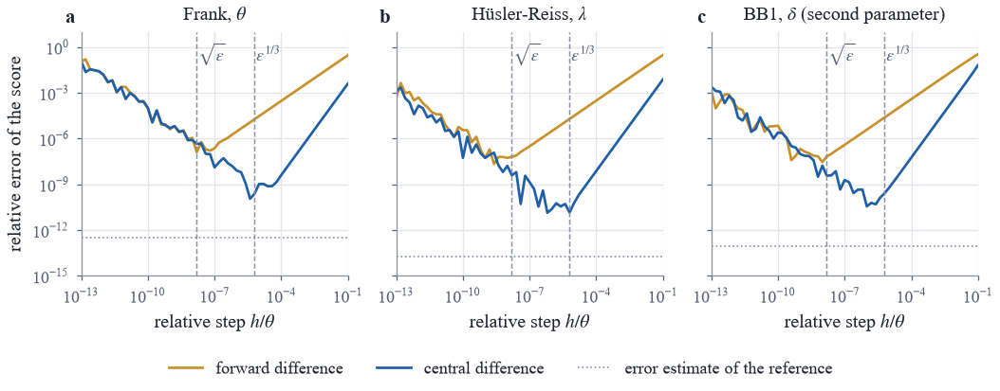

Exact parameter scores¶
Maximum likelihood needs the gradient of the log-likelihood with respect to the copula parameters, the score
for every candidate family and every edge of a vine, many thousands of times during one selection. Writing out \(\partial \log c / \partial\theta\) by hand for 111 families, some with three parameters and nested generators, is error-prone and was done only for a few families in the literature (Schepsmeier & Stöber 2014 derive them for the classic bivariate families). Finite differences are the usual fallback, with their well-known costs. fortvine takes a third route: each family's log-density is written once, in generic code, and compiled both for ordinary reals and for dual numbers that carry exact derivatives alongside every value.
Dual numbers¶
A dual number is a value together with its gradient with respect to the parameters,
Arithmetic on dual numbers applies the chain rule to every operation:
Starting from the parameters themselves, \(\tilde\theta_j = (\theta_j, e_j)\), and the data as constants, \(\tilde u = (u, 0)\), any formula evaluated in dual arithmetic delivers \(\log c\) and its exact gradient in one pass. This is forward-mode automatic differentiation; the result is exact up to floating-point rounding, like the value itself.
src/fortvine_ad.f90 defines the types and their operator overloads:
type, public :: hd
real(dp) :: v = 0.0_dp ! value
real(dp) :: g(3) = 0.0_dp ! gradient with respect to up to 3 parameters
end type hd
hvar(x, i)creates the \(i\)-th independent variable,hconst(x)a constant;+ - * / **are overloaded for every combination ofhdandreal(dp);hexp,hlog,hlog1p,hexpm1,hsqrt,habsand the normalhpnorm,hdnormpropagate gradients through the elementary functions (each through one helper,hunary(x, f, f')), andhlseis a log-sum-exp.
hd always has three gradient slots, the most any family needs. Most families have one or
two parameters, so src/fortvine_adk.inc is a template of the same type with a fixed
width AD_N; the end of fortvine_ad.f90 instantiates it twice through the preprocessor,
giving modules fortvine_ad1 (type hd1, one slot) and fortvine_ad2 (type hd2, two
slots). Their scores are 1.1 to 2 times cheaper than through hd because no work is spent
on unused slots.
One generic interface for reals and duals¶
The modules also define generic names that resolve to the real or the dual version,
depending on the argument type: fval (the value), flog, fexp, flog1p, fexpm1,
fsqrt, fabs, fpnorm, fdnorm, flse. A family written with these names and with
the type left open compiles for every type.
Writing each family once¶
The family code lives in three include files that never declare a concrete type for the quantities depending on the parameters. They use preprocessor macros instead:
| Macro | Meaning |
|---|---|
VT |
the value type: real(dp), type(hd), type(hd1) or type(hd2) |
VCONST(x) |
lift a real constant into VT (hconst, h1const, h2const; empty in real mode) |
LPDF_NAME |
name of the compiled log-density of the core families (families_core.inc) |
EXT_NAME |
name of the compiled extended families (families_ext.inc: Plackett, FGM, AMH, Galambos, Hüsler-Reiss, BB2-BB5, BB9, BB10) |
GEN_NAME |
name of the compiled generic engine (families_gen.inc, codes 10000+) |
REALMODE |
defined only for the real-valued build, which additionally computes the h-functions |
src/fortvine.f90 includes the files once per type:
#define VT type(hd)
#define VCONST hconst
#define LPDF_NAME lpdf_hd
#define EXT_NAME ext_lpdf_hd
#define GEN_NAME gen_ext_lpdf_hd
#include "families_core.inc"
#include "families_ext.inc"
#include "families_gen.inc"
#undef VT
... ! the same for type(hd1) -> lpdf_h1, ... and type(hd2) -> lpdf_h2, ...
#define VT real(dp)
#define REALMODE
#define EXT_NAME ext_eval_r ! evaluation: log-density and both h-functions
#include "families_ext.inc"
...
#define GEN_NAME gen_eval_rv
#include "families_gen.inc"
so one source line of, say, the Tawn Pickands function becomes four compiled routines: a
plain evaluator used by pdf, hfunc1, vine densities and simulation, and three score
evaluators of widths 3, 1 and 2 used by the optimiser. A correction to a formula reaches
all of them at once, and the value computed in dual arithmetic is, operation for operation,
the value computed in real arithmetic, so the numerical safeguards described in
Numerics (log-space evaluation, log1p/expm1 forms, asymptotic branches)
protect the scores as well as the values.
Branches on the value of a dual quantity are written with fval(x), e.g.
if (fval(z) > -30.0_dp) selects between the direct and the asymptotic form of
\(\log\Phi(z)\). The derivative of the branch taken is exact; at a switch point the two
branches agree to the accuracy of the expansion.
Families with their own derivative code¶
A few families bypass the dual numbers because something faster or better is available:
- The one-parameter Gaussian, Clayton, Gumbel, Frank and Joe copulas have hand-derived first and second parameter derivatives of the log-density (and of the h-functions and \(C\), for discrete margins). One pass over the data then yields \(\ell\), \(\ell'\) and \(\ell''\), and Newton's method started at the Kendall's-tau inversion converges in about two passes (a Le Cam one-step estimator followed by a check); the Gaussian likelihood equation is solved exactly as a cubic.
- The Student copula's \(\nu\) and the t-EV copula's \(\nu\) enter through the \(t\) distribution function, whose derivative in the degrees of freedom has no closed form; fortvine profiles \(\nu\) by Brent's method while \(\rho\) is solved by Newton's method on its exact score, and for the t-EV copula finishes with a joint Fisher-scoring step that uses a differentiated continued fraction for the \(\nu\)-score.
- Pair copulas with discrete margins are fitted on the exact discrete likelihood with value-only methods (Brent for one parameter, Nelder-Mead from a grid otherwise).
Every other family, hand-coded or generic, gets its scores from dual numbers.
From scores to a maximiser: Fisher scoring¶
The score alone does not give a step length. Newton's method would also need the Hessian, \(\sum_i \partial^2 \log c_i / \partial\theta\,\partial\theta^\top\), which forward-mode duals do not provide without carrying \(k^2\) more numbers through every operation. fortvine instead uses the outer-product approximation of Berndt, Hall, Hall & Hausman (1974), BHHH:
At the true parameter, the expected outer product of the score equals the Fisher information (the information matrix identity), so the step
is a Fisher-scoring step, with a Levenberg-Marquardt damping \(\lambda\) that is increased
when a step fails to improve the likelihood and decreased tenfold after each success. The
implementation (newton_fit in src/fortvine.f90) adds:
- Box constraints by projection: a parameter at a bound whose score points outward is held fixed for the step (an active set), the others are solved by Cholesky factorisation of the free block, and the new point is clipped into the box.
- Backtracking by interpolation: a rejected step is shortened to the maximiser of the quadratic through the old value, the step's directional derivative and the trial value, limited to between 10 % and 50 % of its length.
- Log scale for positive parameters whose box spans two or more decades in families where that was measured to help (BB8, Hüsler-Reiss, BB2, BB9, BB10): the optimiser works in \(z = \log\theta\) with score \(\theta\, \partial\ell/\partial\theta\).
- Aitken extrapolation when successive steps shrink geometrically in one direction (a slow crawl along a ridge or towards a bound).
- A BFGS update of the curvature model from the exact score changes for ridge-shaped likelihoods (used for the subsample stage and for t-EV), where BHHH alone zig-zags.
- Convergence when the Newton decrement \(\tfrac12 g^\top\delta\), the predicted remaining gain, falls below \(10^{-8}(1 + |\ell|)\), or the step becomes negligible.
- Two stages. A fit first runs on a deterministic stride subsample of about 600 observations from a few starting points (grid, Blomqvist-beta or tau-based starts), and only the best result is polished on all \(n\) observations, which typically takes 1-3 full-data iterations. The final stopping rule is the full-data one, so the result is the full-data MLE.
- Racing during selection: the predicted gain also bounds how much a candidate can still improve; a candidate whose bound falls below the best criterion already achieved is abandoned.
Because the BHHH matrix is a sum of outer products it is positive semi-definite by construction, so every undamped step is an ascent direction, unlike Newton steps with an indefinite Hessian far from the optimum.
Why not finite differences?¶
A central finite-difference gradient of a \(k\)-parameter log-likelihood needs \(2k\) extra likelihood evaluations, each a full pass over the data, and has an error of order \(h^2 \lVert \partial^3\ell \rVert + \varepsilon\lvert\ell\rvert/h\), minimised near \(h \approx \varepsilon^{1/3}\) at a relative accuracy of roughly \(10^{-5}\) to \(10^{-6}\). Forward differences (\(k\) extra passes) do worse, about \(\sqrt\varepsilon \approx 10^{-8}\) at best. Several properties of copula likelihoods make this worse in practice:
- Bounds. Many optima lie on or next to the parameter box (\(\delta \to 1\) in BB families, \(\psi \to 1\) in Tawn models, \(\nu\) at its upper bound). A difference stencil must be one-sided there, losing an order of accuracy.
- Scale. Parameters range over several decades (a Hüsler-Reiss \(\lambda\) of 0.05 and of 20 are both legitimate), so no single step \(h\) is right everywhere.
- Branches. The numerically safe evaluation switches formulas at thresholds
(asymptotic expansions,
log1mexp's switch, clamping). A stencil that straddles a switch differentiates the switching error, not the function. - Per-observation scores. BHHH needs the score of every observation, not only of the sum; with finite differences that is \(n \times 2k\) density evaluations stored or recomputed, with each per-observation difference noisier than the total.

Dual numbers avoid all four: the gradient costs one pass whose arithmetic is roughly \((1 + k)\) times that of the value, it is exact wherever the value is accurate, it needs no step size, and it is available per observation for free. In fortvine the one pass that evaluates the log-likelihood also returns the gradient and the BHHH matrix, which is what makes fitting all 112 parametric candidates of a vine edge affordable (see the benchmarks).